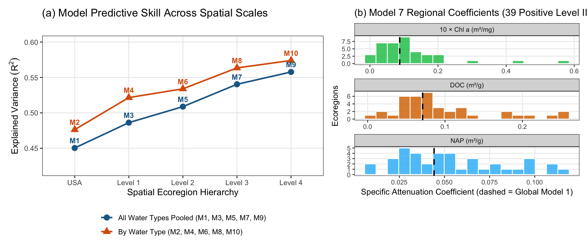

Section 6 Hierarchical Bio-Optical Models (models.R)
6.1 Additive Beer–Lambert Model Formulation
We test ten candidate linear models that estimate specific light-attenuation coefficients (\(\alpha_{\text{NAP}}, \alpha_{\text{DOC}}, \alpha_{\text{Chl }a}\)) via ordinary least squares (OLS) with a fixed pure-water attenuation offset \(k_w = 0.04776\text{ m}^{-1}\) and no intercept:
\[k_d - k_w = \alpha_{\text{NAP},g}\,\text{NAP} + \alpha_{\text{DOC},g}\,\text{DOC} + \alpha_{\text{Chl }a,g}\,\text{Chl }a, \qquad z_{SD} = \frac{1}{k_w + \alpha_{\text{NAP},g}\,\text{NAP} + \alpha_{\text{DOC},g}\,\text{DOC} + \alpha_{\text{Chl }a,g}\,\text{Chl }a}\]
Here \(g\) indexes the stratification group: continental USA (Model 1), water-body type alone (Model 2), EPA Ecoregion Levels I–IV without water-type separation (Models 3, 5, 7, 9), or EPA Ecoregion Levels I–IV crossed with water-body type (Models 4, 6, 8, 10). Every modeled group requires \(> 100\) training matchups.

Figure 6.1: (a) Explained variance (R²) across Models 1–10, comparing ecoregion-only models (circles) against ecoregion × water-type models (triangles). (b) Distribution of fitted specific attenuation coefficients across the 39 strictly positive Level III ecoregions in Model 7 compared with the continental global fit (Model 1, vertical dashed lines).
6.2 Table 1: Performance of Candidate Bio-Optical Models (Models 1–10)
Every model’s explained variance (\(R^2\)), root-mean-square error (\(\text{RMSE}_{k_d}\)), and common-sample Bayesian Information Criterion (\(\text{BIC}\)) are evaluated across all 274,445 training matchups:
| Level | Model | By Type? | Groups (G) | Group Size Median (Min – Max) | R² | R² (exact) | RMSE kd (m⁻¹) | Fitted Coefs | Strictly Positive Groups | ΔBIC vs. Model 1 |
|---|---|---|---|---|---|---|---|---|---|---|
| USA | 1 | No | 1 | 274,445 | 0.45 | 0.450 | 1.23 | 3 | 1 / 1 | 0 |
| USA | 2 | Yes | 3 | 63,208 (60,868 – 150,369) | 0.48 | 0.476 | 1.21 | 9 | 3 / 3 | -11,932 |
| Level 1 | 3 | No | 7 | 1,361 (261 – 239,570) | 0.49 | 0.486 | 1.20 | 21 | 5 / 7 | -15,255 |
| Level 1 | 4 | Yes | 16 | 1,322 (104 – 136,937) | 0.52 | 0.522 | 1.15 | 48 | 12 / 16 | -35,721 |
| Level 2 | 5 | No | 16 | 1,912 (118 – 187,534) | 0.51 | 0.509 | 1.16 | 48 | 14 / 16 | -31,344 |
| Level 2 | 6 | Yes | 31 | 1,315 (104 – 106,121) | 0.53 | 0.534 | 1.13 | 93 | 25 / 31 | -45,902 |
| Level 3 | 7 | No | 47 | 685 (107 – 120,350) | 0.54 | 0.540 | 1.11 | 141 | 39 / 47 | -55,487 |
| Level 3 | 8 | Yes | 70 | 550 (102 – 58,066) | 0.56 | 0.564 | 1.08 | 210 | 57 / 70 | -68,519 |
| Level 4 | 9 | No | 123 | 341 (102 – 51,715) | 0.56 | 0.558 | 1.08 | 369 | 107 / 123 | -67,115 |
| Level 4 | 10 | Yes | 161 | 364 (102 – 36,809) | 0.57 | 0.574 | 1.06 | 483 | 135 / 161 | -74,503 |
Why We Select Model 7 (Level III Ecoregions) for Continental Ternary Analysis
- Strong regional skill and parsimony: Moving from the global model (Model 1, \(R^2 = 0.45\)) to Level III ecoregions (Model 7,
47groups, \(R^2 = 0.54\)) increases \(R^2\) by \(+0.09\) and improves BIC by \(\Delta\text{BIC} = -55{,}486\), while preserving a median group size of \(n = 685\) (107–120,350). - Physical positivity: In Model 7, 39 of 47 Level III ecoregions have strictly positive, highly significant (\(p < 0.001\)) slopes for all three constituents. Subdividing further to Level IV (Models 9–10) pushes median group size down to \(n = 341\text{–}364\)—well below the \(n \approx 1{,}000\) convergence threshold (
Figure S1)—for only \(+0.02\text{ to }+0.03\) gain in \(R^2\). - Seamless river–estuary continuity: Separating water types within Level III ecoregions (Model 8 vs. Model 7) adds only \(+0.02\) in \(R^2\) (
0.54\(\rightarrow\)0.56). Because Model 7 uses a single set of regional slopes across streams, lakes, and estuaries, it can be applied across connected river-to-estuary networks without artificial step changes at water-type boundaries (Figure 3).
6.3 Comparison with Published Bio-Optical Benchmarks
In global Model 1 (\(n = 274{,}445\)), \(\alpha_{\text{DOC}} = 0.0711\text{ m}^2\text{ g}^{-1}\), \(\alpha_{\text{NAP}} = 0.0442\text{ m}^2\text{ g}^{-1}\), and \(\alpha_{\text{Chl }a} = 0.0088\text{ m}^2\ (\text{mg Chl }a)^{-1}\) (ratios \(\alpha_{\text{DOC}} \approx 1.6\,\alpha_{\text{NAP}} \approx 8.1\,\alpha_{\text{Chl }a}\) in Model 1, and \(\alpha_{\text{DOC}} \approx 2.0\,\alpha_{\text{NAP}} \approx 11\,\alpha_{\text{Chl }a}\) across all regional groups in Table S1). These empirically fitted values align closely with first-principles biophysical derivations and field optics studies:
| Constituent | Units | AquaMatch Global (Model 1) | AquaMatch by Type (Model 2) | Literature Range | Primary References |
|---|---|---|---|---|---|
| Chl a (alpha_Chl) | m^2 (mg Chl a)^-1 | 0.0088 | Estuary: 0.0122; Lake: 0.0080; Stream: 0.0110 | 0.008 - 0.020 (canonical k_c = 0.016) | Bannister (1974) L&O 19:1-12; Morel (1988) JGR 93:10749; Kirk (1994) Light and Photosynthesis in Aquatic Ecosystems |
| NAP (alpha_NAP) | m^2 g^-1 (L mg^-1 m^-1) | 0.0442 | Estuary: 0.0320; Lake: 0.0461; Stream: 0.0491 | 0.025 - 0.070 | Gohin et al. (2005) Int. J. Remote Sens. 26:1639; Gallegos et al. (2011) Estuar. Coast. Shelf Sci. 95:218; Kirk (1994) |
| DOC (alpha_DOC) | m^2 g^-1 (L mg^-1 m^-1) | 0.0711 | Estuary: 0.0654; Lake: 0.0577; Stream: 0.0752 | 0.030 - 0.150 | Morris et al. (1995) L&O 40:1381; Spencer et al. (2012) JGR 117:G03001; Griffin et al. (2018) Water Res. 144:719 |
6.4 Table S1: Fitted Coefficients, Standard Errors, and Significance
All ten models’ group sample sizes (\(n\)), specific attenuation coefficients, standard errors, and two-sided \(t\)-test \(p\)-values are exported to figs/tables/tableS1_coefficients_aquamatch.csv. Below are Models 1, 2, and the 39 strictly positive Level III ecoregion groups of Model 7:
| Model | Ecoregion | Water Type | n | α_NAP (m²/g) | α_DOC (m²/g) | α_Chl a (m²/mg) | p (NAP) | p (DOC) | p (Chl a) |
|---|---|---|---|---|---|---|---|---|---|
| 1 | USA | All | 274,445 | 0.0442 | 0.0711 | 0.0088 | < 1e-16 | < 1e-16 | < 1e-16 |
| 2 | USA | Estuary | 63,208 | 0.0320 | 0.0654 | 0.0122 | < 1e-16 | < 1e-16 | < 1e-16 |
| 2 | USA | Lake | 60,868 | 0.0461 | 0.0577 | 0.0080 | < 1e-16 | < 1e-16 | < 1e-16 |
| 2 | USA | Stream | 150,369 | 0.0491 | 0.0752 | 0.0110 | < 1e-16 | < 1e-16 | < 1e-16 |
| 7 | 10.1.2 | All | 107 | 0.0244 | 0.0531 | 0.0029 | 0.0015 | < 1e-16 | 0.0907 |
| 7 | 10.1.6 | All | 122 | 0.0751 | 0.0407 | 0.0569 | < 1e-16 | 0.0013 | 2.5e-07 |
| 7 | 10.1.8 | All | 199 | 0.0089 | 0.1074 | 0.0097 | 2.3e-12 | < 1e-16 | 5.4e-07 |
| 7 | 10.2.4 | All | 325 | 0.0756 | 0.2351 | 0.0102 | < 1e-16 | 4.5e-05 | 0.3160 |
| 7 | 15.4.1 | All | 9,579 | 0.0842 | 0.0485 | 0.0063 | < 1e-16 | < 1e-16 | 1.3e-16 |
| 7 | 5.2.1 | All | 1,313 | 0.0586 | 0.0253 | 0.0095 | < 1e-16 | < 1e-16 | 1.1e-13 |
| 7 | 6.2.10 | All | 152 | 0.1160 | 0.0035 | 0.0019 | < 1e-16 | 0.7299 | 0.6706 |
| 7 | 6.2.13 | All | 799 | 0.0443 | 0.0594 | 0.0094 | < 1e-16 | < 1e-16 | < 1e-16 |
| 7 | 8.1.1 | All | 798 | 0.1112 | 0.0290 | 0.0046 | < 1e-16 | < 1e-16 | 4.5e-05 |
| 7 | 8.1.4 | All | 405 | 0.0320 | 0.0432 | 0.0100 | < 1e-16 | < 1e-16 | < 1e-16 |
| 7 | 8.1.7 | All | 1,145 | 0.0100 | 0.0855 | 0.0103 | < 1e-16 | < 1e-16 | < 1e-16 |
| 7 | 8.2.1 | All | 685 | 0.0261 | 0.0822 | 0.0099 | < 1e-16 | < 1e-16 | < 1e-16 |
| 7 | 8.3.1 | All | 1,719 | 0.0295 | 0.0742 | 0.0057 | < 1e-16 | < 1e-16 | 0.0003 |
| 7 | 8.3.2 | All | 587 | 0.0999 | 0.0757 | 0.0096 | < 1e-16 | < 1e-16 | < 1e-16 |
| 7 | 8.3.3 | All | 2,465 | 0.0523 | 0.0816 | 0.0216 | < 1e-16 | < 1e-16 | < 1e-16 |
| 7 | 8.3.4 | All | 3,000 | 0.0277 | 0.1260 | 0.0159 | < 1e-16 | < 1e-16 | < 1e-16 |
| 7 | 8.3.5 | All | 33,735 | 0.0477 | 0.1252 | 0.0098 | < 1e-16 | < 1e-16 | < 1e-16 |
| 7 | 8.3.6 | All | 503 | 0.0506 | 0.0969 | 0.0182 | < 1e-16 | 3.1e-16 | 2.6e-09 |
| 7 | 8.4.1 | All | 506 | 0.0341 | 0.0886 | 0.0214 | < 1e-16 | < 1e-16 | < 1e-16 |
| 7 | 8.4.2 | All | 209 | 0.0962 | 0.0450 | 0.0421 | < 1e-16 | 0.0024 | 3.6e-08 |
| 7 | 8.4.4 | All | 394 | 0.0641 | 0.1271 | 0.0178 | < 1e-16 | < 1e-16 | < 1e-16 |
| 7 | 8.4.5 | All | 1,308 | 0.0913 | 0.0647 | 0.0142 | < 1e-16 | < 1e-16 | < 1e-16 |
| 7 | 8.4.8 | All | 259 | 0.1101 | 0.0771 | 0.0046 | < 1e-16 | < 1e-16 | 0.0017 |
| 7 | 8.4.9 | All | 591 | 0.0419 | 0.0693 | 0.0118 | < 1e-16 | < 1e-16 | < 1e-16 |
| 7 | 8.5.1 | All | 63,815 | 0.0355 | 0.1863 | 0.0064 | < 1e-16 | < 1e-16 | < 1e-16 |
| 7 | 8.5.2 | All | 1,252 | 0.0226 | 0.1053 | 0.0186 | < 1e-16 | < 1e-16 | < 1e-16 |
| 7 | 8.5.3 | All | 120,350 | 0.0252 | 0.0735 | 0.0076 | < 1e-16 | < 1e-16 | < 1e-16 |
| 7 | 8.5.4 | All | 2,141 | 0.0211 | 0.1350 | 0.0061 | < 1e-16 | < 1e-16 | 6.1e-08 |
| 7 | 9.2.1 | All | 276 | 0.0981 | 0.0200 | 0.0028 | < 1e-16 | 0.0064 | 0.0267 |
| 7 | 9.2.3 | All | 6,157 | 0.0320 | 0.0498 | 0.0137 | < 1e-16 | < 1e-16 | < 1e-16 |
| 7 | 9.2.4 | All | 3,173 | 0.0676 | 0.0806 | 0.0076 | < 1e-16 | < 1e-16 | < 1e-16 |
| 7 | 9.3.1 | All | 212 | 0.0672 | 0.0564 | 0.0066 | < 1e-16 | 2.7e-09 | 6.7e-05 |
| 7 | 9.3.3 | All | 1,117 | 0.0400 | 0.0656 | 0.0300 | < 1e-16 | < 1e-16 | < 1e-16 |
| 7 | 9.4.1 | All | 199 | 0.0704 | 0.0633 | 0.0049 | < 1e-16 | 0.0016 | 0.0071 |
| 7 | 9.4.2 | All | 885 | 0.0532 | 0.2019 | 0.0001 | < 1e-16 | < 1e-16 | 0.9593 |
| 7 | 9.4.3 | All | 575 | 0.0542 | 0.1850 | 0.0011 | < 1e-16 | < 1e-16 | 0.7332 |
| 7 | 9.4.5 | All | 1,543 | 0.0461 | 0.2004 | 0.0144 | < 1e-16 | < 1e-16 | 1.1e-08 |
| 7 | 9.4.7 | All | 1,127 | 0.0276 | 0.2531 | 0.0018 | < 1e-16 | < 1e-16 | 0.4058 |
| 7 | 9.5.1 | All | 5,562 | 0.0444 | 0.2473 | 0.0024 | < 1e-16 | < 1e-16 | 0.0190 |
In the remaining 8 Level III ecoregions of Model 7, one unconstrained OLS slope estimate is slightly negative (\(p \ge 0.10\)) due to narrow local concentration ranges; during continental ternary projection (Section 8), those ecoregions automatically fall back to global Model 1 coefficients so all attenuation fractions remain strictly positive:
| Level III Ecoregion | n | α_NAP | p (NAP) | α_DOC | p (DOC) | α_Chl a | p (Chl a) |
|---|---|---|---|---|---|---|---|
| 6.2.14 | 114 | 0.0631 | 0 | 0.0531 | 0 | -0.0029 | 0.6344 |
| 7.1.8 | 127 | 0.0309 | 0 | 0.1080 | 0 | -0.0030 | 0.7214 |
| 7.1.9 | 152 | 0.0652 | 0 | 0.0941 | 0 | -0.0032 | 0.0830 |
| 8.3.7 | 2,493 | 0.0348 | 0 | 0.1871 | 0 | -0.0002 | 0.8531 |
| 8.3.8 | 916 | 0.0367 | 0 | 0.1769 | 0 | -0.0016 | 0.5422 |
| 9.4.4 | 144 | 0.0484 | 0 | 0.1252 | 0 | -0.0034 | 0.1053 |
| 9.4.6 | 270 | 0.0731 | 0 | 0.1583 | 0 | -0.0011 | 0.7555 |
| 9.6.1 | 118 | 0.0442 | 0 | 0.2412 | 0 | -0.0094 | 0.1917 |